第一章 基础概念
一般情况下系统需要具有的能力以及对应依赖 1. 数据存储 对应 数据库 2. 记录昂贵的查询操作 对应 缓存 3. 允许用户通过关键字进行搜索 对应 搜索引擎 4. 给其他系统发消息进行异步处理 对应 流式计算框架 (其实也涉及到消息队列) 5. 定时处理大量数据 对应 批处理框架
一个数据密集型系统，可能包括数据库，缓存，搜索引擎，消息队列，同时需要数据变更时需要保持同步
本书对几个特征的定义 1. Reliability 系统需要有一定的容错能力 2. Scalability 随着数据量或者流量的增长 要有对应的方案去应对增长 3. Maintainability 可持续迭代
Reliability
硬件故障
- 冗余存储
- 多节点部署，分布式应用
软件故障
特点是可能带来连锁反应
人为故障
解法有 1. 沙箱环境 2. 从单元测试到集成测试再到人工测试 3. 代码或者配置的回滚能力 4. 应用监控
Scalability
考虑负载和性能之间的关系
大多数情况下响应时间不是一个固定的值，而是数值的分布
一般来看服务端平均响应时间并不是唯一的评价标准，更好的做法有50分位点，95分位点，99分位点，99.9分位点等(p50 p95 p99 p999)
SLA (service level agreement)
提高性能的方案一般有 1. 提高机器的性能，相当于垂直扩展 2. 增加机器数目，相当于水平扩展
水平扩展又分为人为水平扩展和自动扩展(插一句题外话，serverless和自动水平扩展非常类似) 对于有状态的服务水平扩展需要保证状态一致性，这会带来额外的复杂度。
Maintainability
保持系统可持续迭代的建议 1. 保证系统能平稳运行 2. 保持系统较容易理解，特别是对于新加入的工程师能快速上手 3. 系统延展性好，可以快速适应需求的变化
第二章 数据模型和查询语言
关系型数据模型 Mysql，Oracle 对象型数据模型 MongoDB，ElasticSearch
关系型数据存储，需要通过多次join(无论是通过sql还是应用层代码)才能将数据模型(model)转换成对象(object) 对象型数据存储，很难处理多对多的关系
关系型存储和对象型存储对于多对多问题的解决方案没有区别 关系型存储使用外键 对象型存储使用对象引用
如果应用中的数据模型绝大多数是一对多的关系，几乎没有多对多关系，那么使用对象型存储是一个不错的选择
如果应用中的数据模型存在大量多对多关系，更倾向使用关系型存储，并且有一些反范式的方案可以减少join，代价是增加保持数据一致性的复杂度
关系型数据库一般结构化较强，而对象型数据库结构较灵活
关系型数据库和对象型数据库有趋同的趋势(感觉elastic search是集大成者)
以SQL为代表的声明式语言可以屏蔽掉底层的技术细节，在代码不变的情况下通过新增索引就可以提高性能，甚至在大数据组件兴起的当下，Spark SQL，Flink SQL都可以在底层使用多核并行处理的技术来提升性能
一个css和js实现同样功能的例子 页面结构
<ul>
<li class="selected">
<p>Sharks</p>
<ul>
<li>Great White Shark</li>
<li>Tiger Shark</li>
<li>Hammerhead Shark</li>
</ul>
</li>
<li>
<p>Whales</p>
<ul>
<li>Blue Whale</li>
<li>Humpback Whale</li>
<li>Fin Whale</li>
</ul>
</li>
</ul>
需要实现的功能是选中的li背景变为蓝色 css的做法
li.selected > p {
background-color: blue;
}
js的做法
var liElements = document.getElementsByTagName("li");
for (var i = 0; i < liElements.length; i++) {
if (liElements[i].className === "selected") {
var children = liElements[i].childNodes;
for (var j = 0; j < children.length; j++) {
var child = children[j];
if (child.nodeType === Node.ELEMENT_NODE && child.tagName === "P") {
child.setAttribute("style", "background-color: blue");
}
}
}
}
图类型的数据存储
第三章 存储和检索
最简单的数据库
shell脚本实现的最简单的KV存储，文件格式CSV
#!/bin/bash
db_set () {
echo "$1,$2" >> database
}
db_get () {
grep "^$1," database | sed -e "s/^$1,//" | tail -n 1
}
新增和更新都是使用db_set操作，后写入的会覆盖之前的结果
123456,{"name":"London","attractions":["Big Ben","London Eye"]}
42,{"name":"San Francisco","attractions":["Golden Gate Bridge"]}
42,{"name":"San Francisco","attractions":["Exploratorium"]}
文件的顺序写要比随机写快
log其实可以广义理解为只进行追加操作的文件
查询的时间复杂度O(n)，为了提高查询的效率，可以在内存新增哈希表，key表示数据的key，value表示偏移量 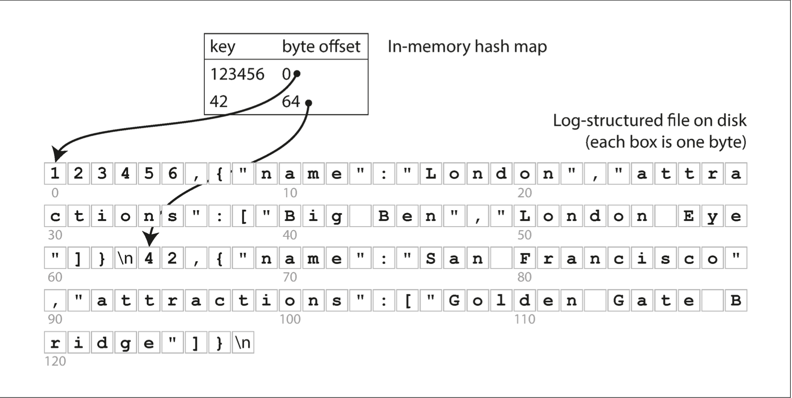
同时可以起线程对文件合并， 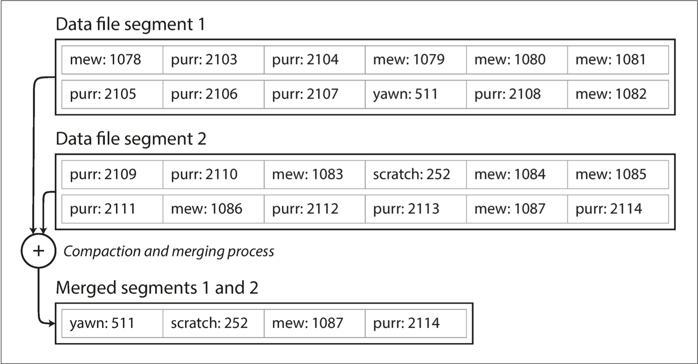
推演到hbase，上述的合并类似majar compact 文件格式直接使用字节存储 对于删除操作写入一个删除标志
这种方案较于直接更新文件数据的优势 1. 磁盘的顺序写性能高于磁盘的随机写 2. 并发控制比较容易，可以多个读线程一个写线程 3. 文件合并可以有效控制产生多个小文件
劣势 1. 如果key的数目大到内存哈希表存不下就不好优化 2. 哈希表不适合范围查询
一般情况下，最简单的数据库写入操作就是往文件追加数据，如果建立索引，会降低写入的性能 数据库不会把所有的字段都加索引，开发过程中也只是在某几个字段加索引(ElasticSearch是个例外)
SSTable(Sorted String Table)
条件 1. 文件中的key需要排序 2. 每一个文件的key只能出现一次 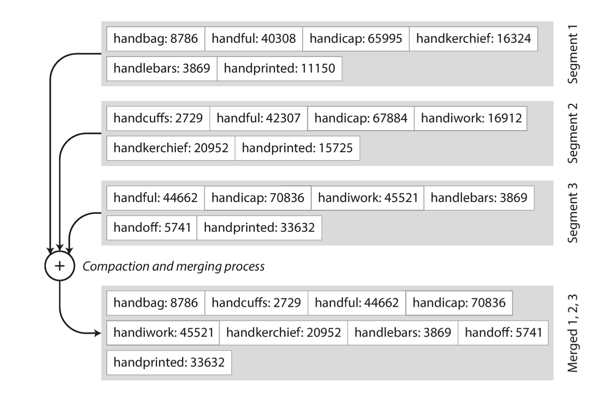
较于哈希表的优势 1. 文件的合并使用归并算法，即使对于大文件也非常好操作 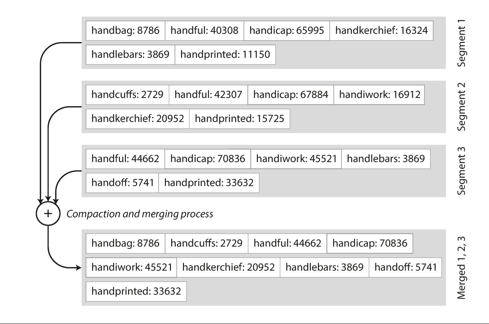
-
内存不需要存储所有key的偏移量，使用稀疏索引即可(即只存储部分偏移量，通过部分偏移量定位之后再查找) 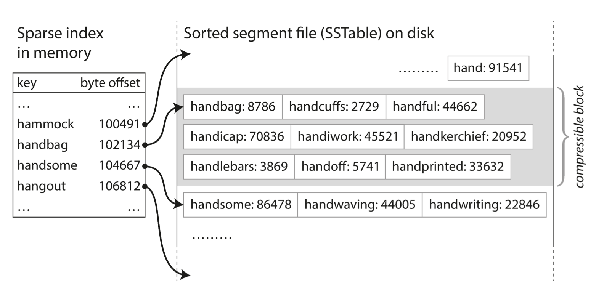
-
每一个文件区块可以压缩降低IO消耗 ？
如何在内存构建SSTable，即随机写，但是读取可以按照顺序读 红黑树，AVL树
基于SSTable的工作过程 1. 内存维护树形结构，数据写入时先写入树形结构(memtable) 2. 树形结构到达一定大小，顺序读出写到磁盘 3. 对于读请求，先读memtable，没有的话再从磁盘找 4. 在后台启动线程合并文件，删除过时的数据 5. 为了防止内存数据丢失，可以使用WAL预写入日志，该日志按照写入顺序存储
这种存储引擎称为LSM(Log-Structured Merge-Tree) 使用该方案的数据库 Cassandra HBase Lucene的倒排索引(key是单词, value是该单词关联的id列表)
还可以优化的点 1. 如果查询不存在的key，需要每次都全表扫描吗？不需要，使用布隆过滤器 2. 合并的时机，基于内存大小和基于时间的策略
总而言之，SSTable的方式简单且高效
B树
在关系型数据库中使用最广泛的数据结构，关系型数据库索引结构的事实标准
B树存储在磁盘，每一页的大小相同，一般是4KB，每一页都有指向其他页的指针，一般情况下B树为3至4层 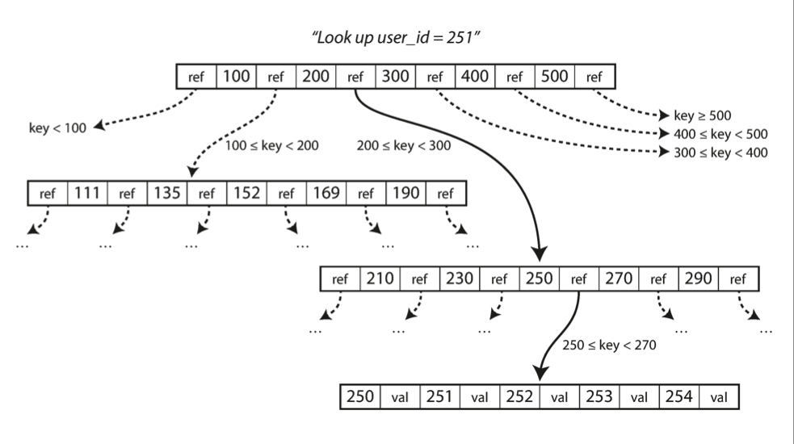
B树每一个节点一般会有几百个指向下一层节点的指针，更新操作需要先查询出位置再回写，插入数据可能导致节点的分裂
为了保证在写入中途数据库挂掉，使用WAL或者redo log
对比
根据经验应该是SSTable的写比较快，B树的读比较快，但是
LSM的优势 1. 适合写多读少的场景，写入比较快 2. 空间利用率高，可以做压缩
LSM的劣势 1. 合并过程可能影响读写 2. 如果写入的速度超过合并的速度，极有可能用光磁盘存储 3. 对于事务操作，天然支持间隙锁的B树更有优势
第四章 编码和演进
第五章 复制
复制与分片的区别
复制: 在不同的节点存储相同的数据
分片: 将完成的数据分为多个部分存储在不同的节点
 上图的数据有两套完成的数据，同时又进行了分片
上图的数据有两套完成的数据，同时又进行了分片
ElasticSearch好像使用的这种结构
数据复制的优势 1. 数据存储在地理位置上离用户更近，可以降低数据延迟 2. 即使一个副本挂了，系统也能保持工作 3. 读写分离，读走副本的方式可以增加读的吞吐量
主从复制
主要面对的问题是主从数据的一致性
主从复制的处理过程 1. 主节点执行写操作，从节点监听主节点的日志完成相同操作 2. 读操作在主从节点都可以执行
同步复制可以保证数据的一致性，缺点是每次写入操作在所有从节点返回响应前必须block住，因此在大多数情况下，只有一台从节点保持同步复制，其他的服务器进行异步复制，这种方式也被称为半同步复制。
主从复制情况下高可用的设计思路 如果从节点挂了，可以使用位点追赶的方式执行 如果主节点挂了，需要把一个从节点提升为主节点，这个过程称为故障转移(failover)
自动化的故障转移需要以下几个步骤 1. 心跳机制用于决定是否出现故障 2. 选举一个新的主节点 3. 变更所有的读写配置
复制日志的选取 1. WAL 物理日志，和存储引擎有关，例如mysql innodb的 redo log，记录了磁盘的操作 2. 逻辑日志，和存储引擎无关，例如mysql的bin log，记录的是sql本身的操作
复制延迟问题
主从复制对于读多写少的场景可以极大增加吞吐量 对于异步主从复制策略，存在的问题是同时读主节点和从节点获取的数据可能不同，只能保证最终一致
第六章 数据分片
分片的意义 增加查询的吞吐量，数据分布到不同的磁盘，简单的查询可以并行 如果使用10个节点存储数据，并且数据能均匀分配到每一个节点，理想情况下吞吐量可以提升到10倍，数据倾斜会极大影响分片性能
分片的方式
- 随机分片，问题在于如果想查询某一行记录必须扫描所有分片
- 对于kv存储，并且key是可排序的，那么可以定义不同的key区间进行分片
- 哈希分片，但是范围查询不好操作
使用key区间分片 以及 哈希分片可以结合在一起使用 例如对于一个视频网站，如果需要抽取某一个用户在一个时间区间内的观看数据 可以首先使用用户id(user_id)进行哈希分片，然后对观看记录的时间戳(update_timestamp)进行区间分片
对于一个社交媒体应用，假如一个大V突然更新一个事件，那么对于这条事件的读请求会特别多，即使使用哈希分片依然无法解决问题，因为对于相同的输入(大V的user_id)一定会得到相同的输出。解决方案是在user_id之后增加随机前缀或随机后缀，这样可以一定程度缓解数据倾斜，但是如果进行读请求就比较复杂，因为增加随机前缀或随机后缀后一个user_id的数据被分配到不同的分片上了
二级索引的组织方式
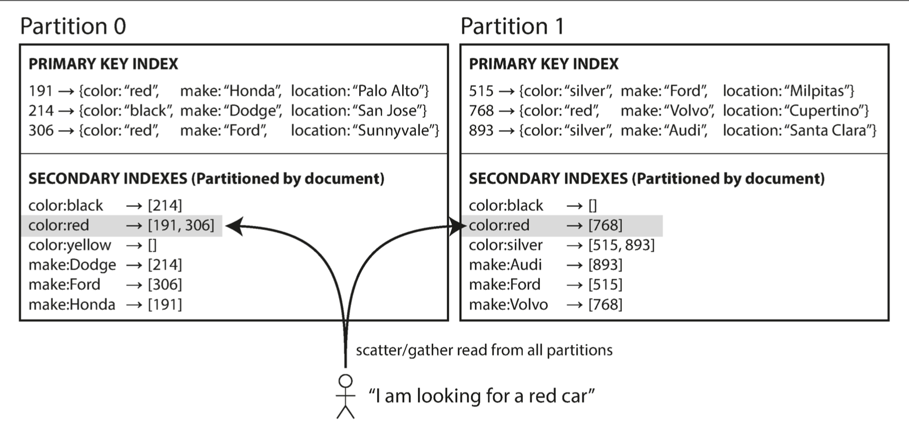
每一个分片组织自己的二级索引，如果根据二级索引的条件过滤，需要从每一个分片抽取数据，读性能较低但是写性能较高
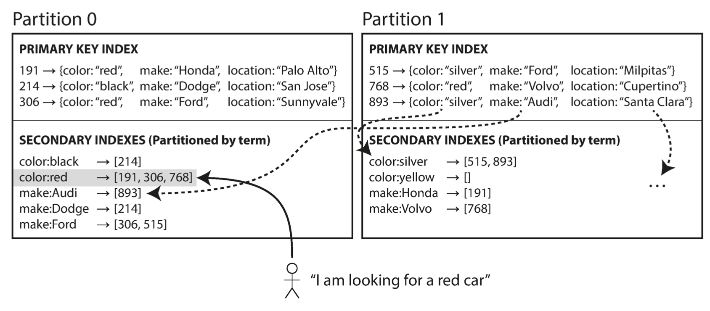
二级索引也使用分片的方式组织，条件过滤可以直接请求到某一个分片，读性能较高但是写性能较低(写的同时需要构造索引，并且记录分身的分片和记录的分片不一定处在同一个节点，涉及分布式事务问题，大多数生产实践使用的是异步构造索引的方式，CAP先保证AP)
对于二级索引全局分片的方式，读性能较高存疑，因为即使索引走到了同一个分片，真实的数据不一定在同一个分片上，回表过程必须搜索所有分片，实质上还是可能扫描所有分片
重分区
可能出现的情况 1. 查询请求量级上升，需要增加节点提高吞吐量 2. 存储的数据量上升，需要增加节点保证查询性能 3. 某一个节点挂了，后续的写请求需要其他节点承担
重分区是为了把某一个节点的指责(包括数据本身即读请求 以及写请求)分配到其他的节点。目标如下 1. 重分区之后，还能保持负载均衡 2. 重分区的过程中，保证服务可用，即重分区的同时依然可以接受客户端的读写请求 3. 重分区过程中数据的迁移量较少，降低重分区的耗时，即网络和磁盘IO的开销
固定数目分片
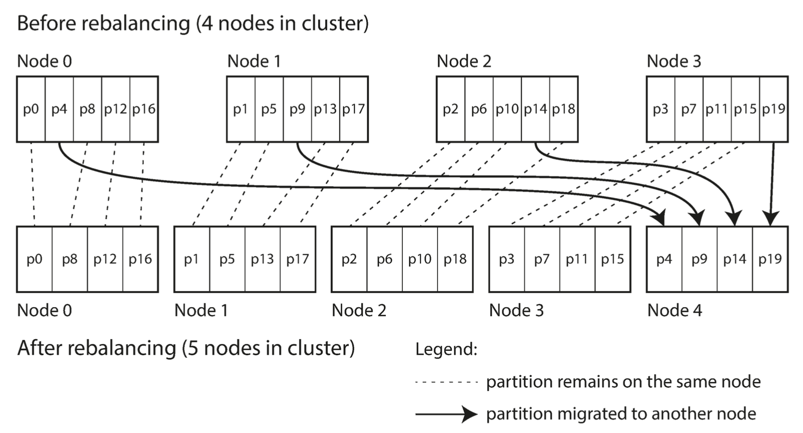 更适用于哈希分片的方式
一般情况下分区的数目远大于节点的数目，比如10节点100分区，如果节点增加或者减少，调整比较简单
根据分片数据量大小，动态分片 更适用于key分片的方式
根据数据量大小进行调整，例如HBase默认分区大小为10GB，如果一个分区的数据量超过该大小会进行拆分，如果多个分片都比较小会进行合并
请求路由机制
如果客户端需要查询或者写入某个请求，如何决定连接到哪个分片？
这个问题和服务发现机制非常类似，比如应用A需要RPC调用应用B的服务，但是如何决定连接到哪一台机器就是服务发现的问题
目前主流的方式有以下三种 1. 通过负载均衡器随机到某个节点，如果该节点可以处理直接处理并返回结果，如果无法处理，由命中的节点再路由到合适的节点处理
-
加一个中间层专门用于路由处理，客户端的所有请求先发送到中心节点，然后由中间节点进行路由
-
客户端感知节点，直接把请求发送到合适的节点 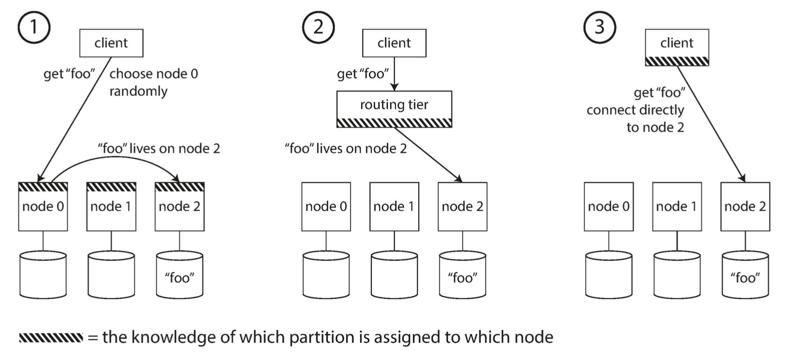
生产实践过程中，大量使用zookeeper保存分片的元数据(HBase使用该架构)
第七章 事务
事务其实也是一种分层设计的体现，应用层不需要再关心某一个操作部分成功或部分失败之后带来的问题，因为事务的原子性保证了只有完全成功或者完全失败两种情况
ACID vs BASE Atomicity, Consistency, Isolation, and Durability Basically Available, Soft state, and Eventual consistency
Atomicity 原子性其实有更合适的解释 Abortability 可撤销 不会产生出现中间状态 Consistency 一致性不仅是数据库来保证的，也是由应用程序决定的，或者可以理解为应用程序借助数据库的原子性和隔离性保证数据的一致性 Isolation 隔离性，用于解决数据库记录更新的并发或竞态情况，最初是使用串行化记录来解决问题的 Durability 持久性，一旦事务提交，即使出现硬件故障，数据也不会丢失，一般情况下通过WAL(write ahead log)实现，真正的持久性是不存在的，因为一旦所有的硬盘和备份数据同时出问题，没有任何补救措施
单一记录的写控制
原子性的实现方式，WAL预写入日志 隔离性的实现方式，对记录加排他锁
多记录的写控制
已提交读(Read Commited RC)
避免脏读，同时避免脏写
脏写: 写数据的时候只会覆盖已提交的数据
避免脏写的实现方案: 加行锁，如果两个事务同时操作一行，先获取锁的事务会锁住该行直到事务提交或回滚，后获取行锁的事务会一直hold住
避免脏读的实现方案: 1. 加行锁，与避免脏写的方案有区别，同样是排他锁，但是是在读完之后立即释放，不需要等到事务提交或回滚后释放，该方案其实还是保证同一时刻只有一个事务能读到数据，并发情况下效率较低 2. 不加锁，在事务中记录修改前后的数据，如果是该事务本身读取，返回修改后的数据，其他事务读取数据时获取的还是修改前的数据(更加有效的方案)
快照隔离与可重复读(Repeatable Read RR)
已提交读无法解决的问题 1. 数据备份 2. 一致性校验场景，例如核对
这两个场景都需要在数据库正常运作的情况下，保证多次读取到的数据是一致的
快照隔离的设计目标: 一个事务开始执行后，它只会看到数据库在当时的快照，即使在该事务执行过程中，有其他事务把数据改了，该事务也只能读取到修改之前的数据
快照隔离的实现方案 避免脏写的方式和可重复读一样，增加行锁 与避免脏读的方式不同，实现思路是读请求不影响写请求, 写请求不影响读请求 多版本并发控制(MVCC), 即保留一条记录的多个版本，版本和事务是否提交强相关 如果只是实现RC，那么MVCC只需要保存一条记录的两个版本，即事务未提交版本和事务已提交版本，但是对于RR，需要维护多个版本
对于一个实现了MVCC存储引擎的数据库来说，RC和RR的区别仅仅在于查询时使用的快照不同，RC每一次查询使用的是最新的快照，而RR使用的是同一份快照，即事务开始时的快照
多版本并发控制的事例，简单来说，每一条记录被拆分为多条时序记录，时间就是事务的id，一般是自增的 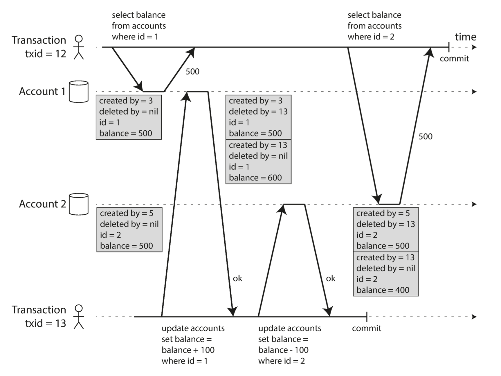
读取规则如下
- 事务开始时，数据库会记录并行的其他事务，忽略其他事务的写请求
- 忽略回滚事务的写请求
- 如果事务id比当前事务大，即使事务被提交，其写请求也会被忽略
- 其他事务的写请求可见
mysql的执行结果和上述步骤有出入，mysql认定的是查询开始的时间点快照，而不是事务本身开始时间点的快照
以图中的事务12为例，读取的条件是
created by <= 12 and (deleted by == nil || deleted by > 12)
特殊问题 a read-modify-write cycle
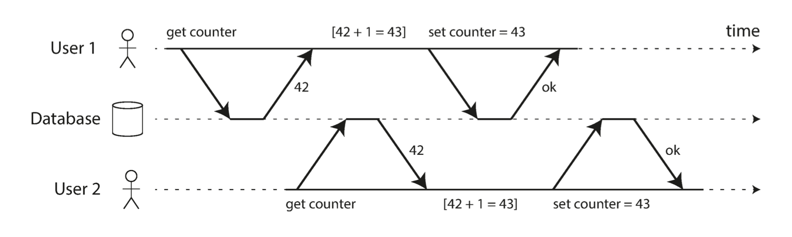 User1的更新丢失了，无论事务隔离级别是RC或者RR都无法避免这个问题
根据理解，串行化可以解决这个问题，但是性能太低; 乐观锁CAS可以解决该问题，特别是并发冲突较少的情况下
解决方案 1. 依赖数据库本身的原子能力
UPDATE counters SET value = value + 1 WHERE key = 'foo';
- 显式排他锁
BEGIN TRANSACTION;
SELECT * FROM figures
WHERE name = 'robot' AND game_id = 222 FOR UPDATE;
-- Check whether move is valid, then update the position -- of the piece that was returned by the previous SELECT. UPDATE figures SET position = 'c4' WHERE id = 1234;
COMMIT;
- 数据库检测机制
实现了该机制的数据库会检测更新丢失的现象并且回滚事务 包括 PostgreSQL 可重复读 Oracle 串行化 SQL Server 快照隔离
特别注意，mysql并没有这个机制
- CAS compare and set
-- This may or may not be safe, depending on the database implementation
UPDATE wiki_pages SET content = 'new content' WHERE id = 1234 AND content = 'old content';
需要将事务隔离级别设置为RC，如果设置为RR CAS同样有效，update不受RR读一致的限制
如果使用特定的字段执行CAS，可能带来ABA问题，最好的方式是使用自增的version字段解决问题
幻读
一个事务的写操作(UPDATE, INSERT, DELETE)可能影响另一个事务查询操作(特别是对行数有影响的操作，例如count)的结果
引申出新的问题，假如select for update一个不存在的记录，能够成功加排他锁吗？根据已有的开发经验来看，是可以的，涉及间隙锁的概念，应该是mysql innodb存储引擎特有的实现方式
串行化
互联网应用放弃使用串行化的理由 1. 数据库设计者的初衷是将用户所有的交互使用一个大事务提交(使用存储过程)，但是现代互联网应用更倾向于使用多个独立的小事务，事务的并发是天然存在的 2. 如果多个独立小事务，使用串行化的事务隔离级别将是灾难性的
串行化的思路目前使用在缓存数据库redis，实现方案即单线程，redis作为缓存中间件不需要保证持久性，绝大多数操作都在内存完成，不需要和磁盘交互
存储过程几乎被互联网应用弃用了，大事务一方面对数据库性能有影响，同时数据分析相关的操作早已被OLAP系统代替了